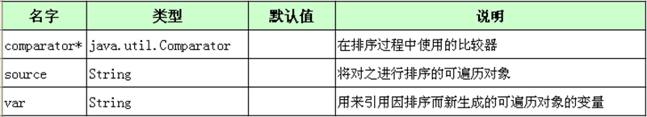
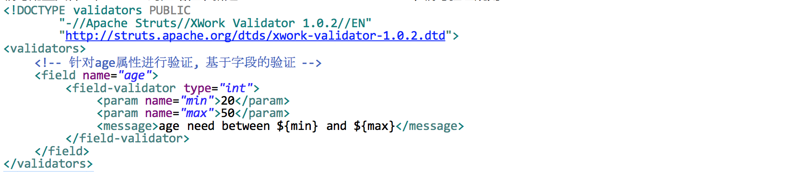
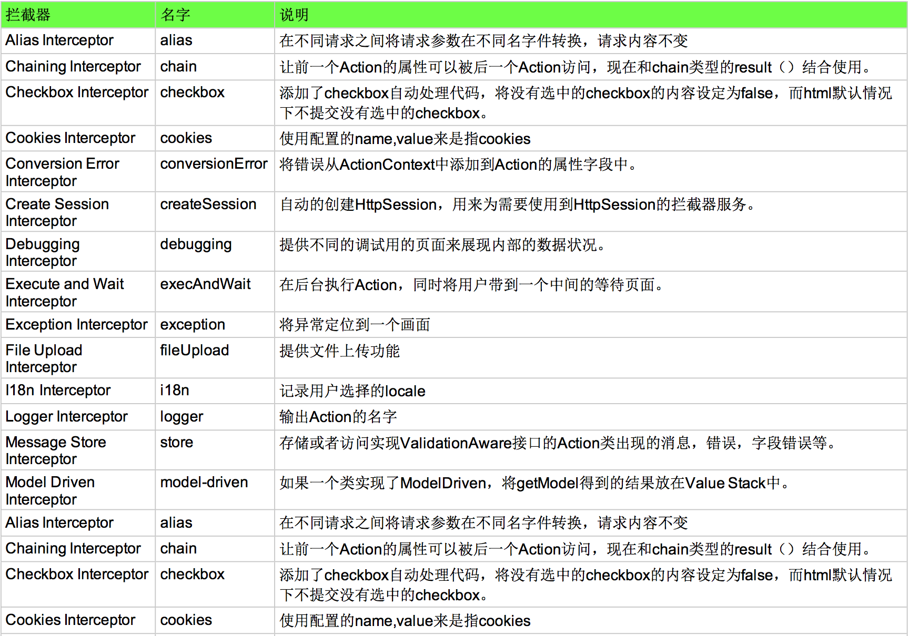
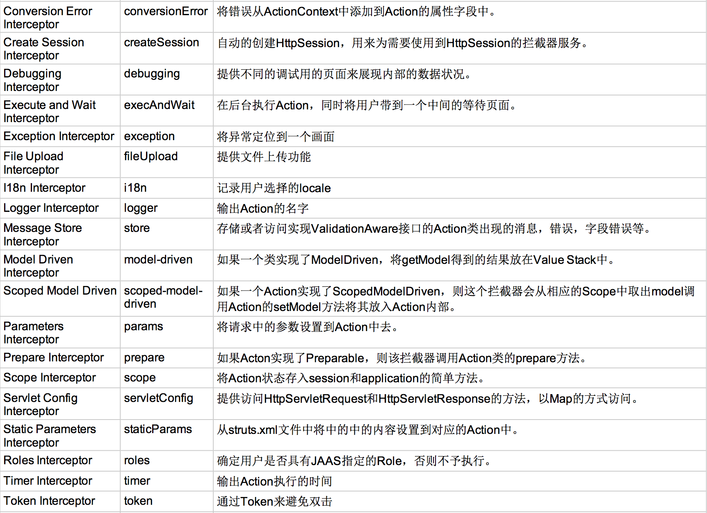
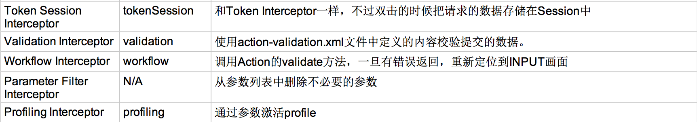
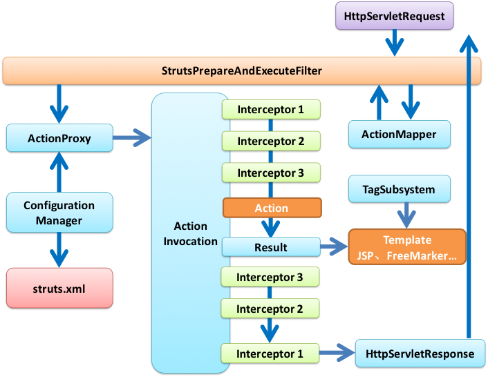

1. Struts基础
- 使用Filter作为控制器
- 好处：使用过滤器作为控制器，可以方便的在应用程序中对所有资源进行控制访问
- 拦截资源并不是Servlet擅长的，Filter拥有Servlet所有功能的情况下还具备FilterChain
- e.g.
<!--index.jsp--> <a href="product-input.action">Product Input</a> <!--WEB-INF/pages/input.jsp--> <form action="product-save.action"> ProductName : <input type="text" name="productName"> ProductDesc : <input type="text" name="productDesc"> ProductPrice : <input type="text" name="productPrice"> <input type="submit" value="Submie"> </form> //WEB-INF/pages/detais.jsp ProductId : ${requestScope.product.productId } ProductName : ${requestScope.product.productName } ProductDesc : ${requestScope.product.productDesc } ProductPrice : ${requestScope.product.productPrice } Product.java package org.yang.demo; public class Product { private int productId; private String productName; private String productDesc; private String productPrice; public Product() { } public Product(String productName, String productDesc, String productPrice) { this.productName = productName; this.productDesc = productDesc; this.productPrice = productPrice; } public void setProductDesc(String productDesc) { this.productDesc = productDesc; } public void setProductName(String productName) { this.productName = productName; } public void setProductPrice(String productPrice) { this.productPrice = productPrice; } public String getProductDesc() { return productDesc; } public String getProductName() { return productName; } public String getProductPrice() { return productPrice; } public void setProductId(int productId) { this.productId = productId; } public int getProductId() { return productId; } } //FilterDispatcher.java @WebFilter(dispatcherTypes = { DispatcherType.REQUEST, DispatcherType.FORWARD, DispatcherType.INCLUDE, DispatcherType.ERROR } , urlPatterns = { "*.action" }) public class FilterDispatcher implements Filter { public FilterDispatcher() { } public void destroy() { } public void doFilter(ServletRequest request, ServletResponse response, FilterChain chain) throws IOException, ServletException { HttpServletRequest req = (HttpServletRequest) request; //存放转发路径 String path = null; //1. 获取servletPath String servletPath = req.getServletPath(); //2 判断servletPath是否等于"product-input.action"，等于则转发到/WEB-INF/pages/input.jsp if ("/product-input.action".equals(servletPath)) { path = "/WEB-INF/pages/input.jsp"; } //3. 若其等于"/product-save.action"，则 if ("/product-save.action".equals(servletPath)) { //-1 获取请求参数 String productName = request.getParameter("productName"); String productDesc = request.getParameter("productDesc"); String productPrice = request.getParameter("productPrice"); //-2 把请求信息封装为Product对象 Product product = new Product(productName, productDesc, productPrice); //-3 执行保存操作 System.out.println("Save Product : " + productName); //连接数据库略 product.setProductId(1001); //-4 把Product对象保存到request中 ${param.productName} -> ${requestScope.product.productName} request.setAttribute("product", product); //-5 设置转发路径 path = "/WEB-INF/pages/detais.jsp"; } //如果转发路径不为空，则转发 if (path != null) { req.getRequestDispatcher(path).forward(request, response); return ; } chain.doFilter(request, response); } public void init(FilterConfig fConfig) throws ServletException { System.out.println("struts2-1 filter is init!"); } }
- Struts2概述
- Struts2是一个用来开发MVC应用程序的框架，提供了Web应用程序开发过程中一系列常见问题的解决方案
- 对于来自用户的输入数据进行合法性验证
- 同一的布局
- 可扩展性
- 国际化和本地化
- Ajax
- 表单的重复提交
- 文件的上传下载
- 。。。
- Struts2和Struts1的对比
- 在体系结构上更优秀：类更少，更高效，更容易扩展
- 更容易测试：即使不使用浏览器，也可以对Struts2进行测试
- Struts2并不是由Struts1扩展而来，而是由WebWork演变而来
- Struts2是一个用来开发MVC应用程序的框架，提供了Web应用程序开发过程中一系列常见问题的解决方案
- 环境搭建
- 加入jar包：复制struts/apps/struts2-blank/WEB-INF/lib下的所有jar包到当前web应用下的lib目录下
- 在web.xml中配置struts2：复制struts/apps/struts2-blank/WEB-INF/web.xml文件中的过滤器配置到web应用的web.xml文件中
- 在当前web引用的classPath下添加strtus2的配置文件:
复制struts1/apps/struts2-blank/WEB-INF/classes下的struts.xml到当前web应用的src目录下 - 添加DTD约束
- 复制struts.xml中的DTD路径"http://struts.apache.org/dtds/struts-2.3.dtd"
- 在Eclipse -> Window -> Preferences -> XML -> XML Catalog -> Add -> Location=struts-2.3.4-all\struts-2.3.4\src\core\src\main\resources, Key=DTD路径, KeyType=URI
- 使用Struts2修改1.1实例
- 使用Struts2实现与自实现的区别
- 需要搭建Struts2的开发环境
- 不需要显式的定义Filter,而是使用struts2的配置文件
- details.jsp比先前简单 ${requestScope.product.productName} -> ${productName}
- 步骤
- 由product-input.action转到/WEB-INF/pages/input.jsp
<action name="product-input"> <result>/WEB-INF/pages/input.jsp</result> </action> - 由input.jsp页面的action:product-save.action到Prodect的save再到/WEB-INF/pages/details.jsp
<action name="product-save" class="org.yang.demo.Product" method="save"> <result name="details">/WEB-INF/pages/details.jsp </result> </action>
- 由product-input.action转到/WEB-INF/pages/input.jsp
- 具体实现
<!--index.jsp--> <a href="product-input.action">Product Input</a> <!--WEB-INF/pages/input.jsp--> <form action="product-save.action"> ProductName : <input type="text" name="productName"> ProductDesc : <input type="text" name="productDesc"> ProductPrice : <input type="text" name="productPrice"> <input type="submit" value="Submie"> </form> //WEB-INF/pages/detais.jsp ProductId : ${productId } ProductName : ${productName } ProductDesc : ${productDesc } ProductPrice : ${productPrice } Product.java package org.yang.demo; public class Product { private int productId; private String productName; private String productDesc; private String productPrice; public Product() { } public void setProductDesc(String productDesc) { this.productDesc = productDesc; } public void setProductName(String productName) { this.productName = productName; } public void setProductPrice(String productPrice) { this.productPrice = productPrice; } public String getProductDesc() { return productDesc; } public String getProductName() { return productName; } public String getProductPrice() { return productPrice; } public void setProductId(int productId) { this.productId = productId; } public int getProductId() { return productId; } public String save() { System.out.println("save : " + this); return "details"; } }
- 使用Struts2实现与自实现的区别
- Action概述
- action：应用程序可以完成的每一个操作，例如显示一个表单，将信息保存数据库等
- Action类：能够处理structs2请求的类
- 属性的名字必须遵守与javaBean属性名相同的命名规则：属性可以是任意类型，数据类型的转换可以自动发生
- 必须有一个不带参的构造器：通过反射创建javaBean，必须有无参构造器
- 至少有一个供struts2在执行action时调用的方法
- 同一个Action类可以包含多个action方法
- Struts2会为每一个HTTP请求创建一个新的Action实例，不是单例的，是线程安全的
2. 访问web资源
- Web资源：HttpServletRequest, HttpSession, ServletContext等原生Servlet API
- 访问方式
- 和Servlet API解耦的方式：只能访问有限的Servlet API对象，且只能访问其有限的方法(读取请求参数，读取域对象属性 …)
- 使用ActionContext(Action中只有一个方法时推荐使用)
- 实现XxxAware接口(Action中有多个方法时推荐使用)
- 和ServletAPI耦合的方式：可以访问更多的Servlet API对象，且可以调用其原生方法
- 使用ServletActionContext
- 实现ServletXxxAware接口
- 和Servlet API解耦的方式：只能访问有限的Servlet API对象，且只能访问其有限的方法(读取请求参数，读取域对象属性 …)
- 使用ActionContext获取域对象的Map完成读取操作
//TestActionContextAction.java public class TestActionContextAction { public String execute() { //0. 获取ActionContext对象 //ActionContext是Action的上下文对象，可以获取当前Action需要的一切信息 ActionContext actionContext = ActionContext.getContext(); //1. 获取application对应的Map, 并向其中添加一个属性 //-通过调用actionContext的getApplication()对象获取存放application的Map对象 Map<String, Object> applicationMap = actionContext.getApplication(); //-设置属性 applicationMap.put("applicationKey", "applicationValue"); //-获取属性 Object date = applicationMap.get("date"); System.out.println("application date is " + date); //2. session Map<String, Object> sessionMap = actionContext.getSession(); sessionMap.put("sessionKey", "sessionValue"); //可以将获取到的Map对象强转为SessionMap,调用SessionMap的invalidate()方法实现session的销毁 if (sessionMap instanceof SessionMap) { SessionMap sMap = (SessionMap) sessionMap; sMap.invalidate(); } //3. request, 需要手工调用get()方法，传入request字符串来获取 Map<String, Object> requestMap = (Map<String, Object>) actionContext.get("request"); requestMap.put("requestKey", "requestValue"); //4. 获取请求参数对应的Map,并获取指定的参数值 //-键：请求参数的名字, 值：请求参数的字符串数组 //-parameters这个Map只能读不能写，但写了不会报错 Map<String, Object> parameterMap = actionContext.getParameters(); System.out.println("name is " + ((String []) parameterMap.get("name"))[0]); return "success"; } } <!--struts.xml--> <action name="TestActionContext" class="org.yang.demo.action.TestActionContextAction"> <result>/test-actionContext.jsp</result> </action> - 实现XxxAware接口获取域对象的Map完成读取操作
public class TestAwareAction implements ApplicationAware, SessionAware, RequestAware, ParameterAware { private Map<String, Object> application; private Map<String, Object> session; private Map<String, Object> request; private Map<String, String[]> parameter; public String execute() { //1. 向application加入属性 application.put("applicationKey2", "applicationValue2"); //2. 从application中读取属性 System.out.println(application.get("date")); return "success"; } @Override public void setApplication(Map<String, Object> application) { this.application = application; } @Override public void setRequest(Map<String, Object> request) { this.request = request; } @Override public void setSession(Map<String, Object> session) { this.session = session; } @Override public void setParameters(Map<String, String[]> parameter) { this.parameter = parameter; } } - 通过ServletActionContext获得原生Servlet方法
- 获取HttpServletRequest : ServletActionContext.getRequest();
- 获取HttpSession : ServletActionContext.getRequest().getSession();
- 获取ServletContext : ServletActionContext.getServletContext();
- e.g.
public class TestServletActionContextAction { public String execute() { HttpServletRequest request = ServletActionContext.getRequest(); HttpSession session = request.getSession(); ServletContext servletContext = ServletActionContext.getServletContext(); System.out.println("execute ..."); return "success"; } }
- 通过实现ServletXxxAware接口获得原生Servlet方法
- ServletRequestAware : 注入HttpServletRequest对象
- ServletContextAware : 注入HttpServletContext对象
- ServletResponseAware : 注入HttpServletResponse对象
- e.g.
public class TestServletAwareAction implements ServletRequestAware, ServletContextAware, ServletResponseAware { private ServletContext servletContext; private ServletRequest request; private ServletResponse response; public String execute() { System.out.println("execute ..."); return "success"; } @Override public void setServletRequest(HttpServletRequest request) { this.request = request; } @Override public void setServletResponse(HttpServletResponse response) { this.response = response; } @Override public void setServletContext(ServletContext servletContext) { this.servletContext = servletContext; } }
3. 配置
- Struts2常量配置
- Struts2应用的一些常量配置在org.apache.struts2包下的default.properties
- struts.action.extension定义了当前可以接受的请求扩展名
- 在struts.xml中以常量配置的方式修改default.properties中配置的常量
- 修改请求的扩展名:
<constant name="struts.action.extension" value="action,do,"></constant>
- ActionSupport
- ActionSupport是默认的Action类
若某个action节点没有配置class属性，则ActionSupport即为待执行的Action类，execute方法为默认执行的方法 - public class ActionSupport implements Action, Validateable, ValidationAware, TextProvider, LocaleProvider {…}
- 在手工完成字段验证，显示错误信息，国际化等情况下，推荐继承ActionSupport，否则需要手动实现一系列接口
- ActionSupport是默认的Action类
- result
- result是action节点的子节点
- result代表action方法执行后可能去的目的地
- 一个action节点可以配置多个result子节点
- result的name属性值对应action方法可能存在的返回值
- result的type属性表示结果的相应类型
- 在struts-default包result-types结点的name属性中定义
- 常用的类型
- dispatcher(default) : 转发
- redirect：重定向
- redirectAction：重定向到Action
- chain：转发到Action 不可以通过dispatcher方式实现chain功能！
- 通配符映射
- 一个web应用可能存在大量的action声明，利用通配符映射机制可以将彼此相似的映射关系简化为一个映射关系
- 通配符映射规则
- 若好到多个匹配，则优选没有统配符的映射
- 若指定动作不存在，Struts将会尝试将这个URI与任何一个包含着通配符*的动作名进行匹配
- 将通配符匹配到URI字符串的字串可以用{1}{2}来引用，{1}匹配第一个字串，{2}匹配第二个字串
- {0}匹配整个URI
- 若Struts找到带有通配符的匹配不止一个，将按照先后顺序进行匹配
- *可以匹配零个或多个字符，但不包含/字符，如果想把/字符包括在内，需要使用**，如果需要对某个字符进行转义则使用\
- e.g.1
<action name="*-add" class="org.yang.demo.Action" method="add"> <result>/success.jsp</result> </action> //Book-add.action, User-add.action, -add.action, Author-add.action … 都可以调用上述控制器 - e.g.2
<action name="*-add" class="org.yang.demo.{1}" method="add"> <result>/{1}-success.jsp</result> </action> - e.g.3
- 动态方法调用
- 动态方法调用：通过url动态调用Action中的方法，不适用配置文件中配置的方法
- 调用方法：将/struts-app/Product.action(默认调用execute方法)改写为/struts-app/Product!save.action(调用save方法)
- 默认情况下，动态调用方法处在禁用状态
开启方式:<constant name="struts.enable.DynamicMethodInvocation" value="true"></constant>
- 声明式异常处理
- 使用exception-mapping元素配置当前action的声明式异常处理
- exception：指定需要捕获的异常类型
- result：指定一个响应结果，该结果将在捕获到指定异常时被执行，既可以来自当前action声明，也可以来自global-results声明
- e.g.
<action name="product-save" class="org.yang.demo.Product" method="save"> <exception-mapping result="error" exception="java.lang.Exception"/> <result name="details">/WEB-INF/pages/details.jsp</result> <result name="error">/WEB-INF/pages/error.jsp</result> </action>
- 通过global-exception-mappings元素可以为应用程序提供一个全局性捕获异常映射，但global-exception-mapping元素只能引用
global-result声明下的某个result元素
<global-results> <result name="sqlException">/error.jsp</result> </global-results> <global-exception-mappings> <exception-mapping result="sqlException" exception="java.sql.SQLExceptionption"/> </global-exception-mappings>
- 使用exception-mapping元素配置当前action的声明式异常处理
4. 值栈
- 值栈
- 在jsp页面上使用{$productName}读取productName值，实际上该属性并不在request等域对象中，而是从值栈中获取
- 值栈ValueStack
- 贯穿整个 Action 的生命周期(每个 Action 类的对象实例都拥有一个 ValueStack 对象). 相当于一个数据的中转站. 在其中保存当前 Action 对象和其他相关对象，可以从ActionContext中获取值栈对象
- 值栈分为两个逻辑部分
- Map栈：实际上是一个OgnlContext类型，是一个Map，也是对ActionContext的一个引用，里边保存着各种Map:requestMap,sessionMap,applicationMap,parametersMap, attr …
- 对象栈：实际上是CompoundRoot类型，是一个使用ArrayList定义的栈，里边保存各种和当前Action实例相关的对象，是一个数据结构意义上的栈
- OGNL
- 值栈中的属性值
- 对于对象栈：对象栈中某个对象的属性值
- 对于Map栈：读取request, session, application中的属性值或请求参数
- Struts2利用s:property标签和OGNL表达式来读取值栈中的属性值
- 读取对象栈中的属性
- 若想要访问ObjectStack中某个对象的属性值，可以使用：
object.propertyName or object['propertyName'] or object["property"] - ObjectStack里的对象可以通过一个从0开始的下标来引用，以此类推;若希望得到站定对象的message的属性值，可以写为：
[0].message or [0]['message'] or [0]["message"] --->>> 栈顶元素可以省略下标 - 若在指定的对象里没有找到指定属性，则到指定对象的下一个对象继续搜索
- 默认情况下，Action对象会把Struts2自动放在值栈的栈顶
- e.g.
//改写知识点4中Product类的save方法，向其中压入对象 public String save() { System.out.println("save : " + this); //1. 获取值栈 ValueStack valueStack = ActionContext.getContext().getValueStack(); //2. 创建Test对象，并为其赋值 Test obj = new Test(); obj.setProductName("TestValueStack"); obj.setProductDesc("this is a test"); //3. 将Test对象压入栈顶 valueStack.push(obj); return "details"; } <!-- 通过property标签输出值栈的属性值 --> ProductId : <s:property value="[0].ProductId"/> ProductName : <s:property value="[0].ProductName"/> ProductDesc : <s:property value="[0].ProductDesc"/> ProductPrice : <s:property value="[0].ProductPrice"/>
- 若想要访问ObjectStack中某个对象的属性值，可以使用：
- 读取ContextMap中对象的值
- 若访问ContextMap里某个对象的值，可以使用
#object.propertyName , #object['propertyName'] , #object["propertyName"] - e.g. 使用property标签改写EL表达式
SessionProductName : ${sessionScope.product.productName } RequestProductName : ${requestScope.test.productName } 改写为： SessionProductName2 : <s:property value="#session.product.productName"/> RequestProductName2 : <s:property value="#request.test.productName"/>
- 若访问ContextMap里某个对象的值，可以使用
- 调用字段和方法
- 利用OGNL获取普通java类中公有的静态变量和方法
- Struts默认不允许调用普通java类的公有的静态方法，需要打开对应权限
<constant name="struts.ognl.allowStaticMethodAccess" value="true"></constant> - 调用普通java类中公有的静态变量
- 语法：@fullQualifiedClassName@fieldName
- e.g. <s:property value="@java.lang.Math@PI"/>
- 调用普通java类中公有的静态方法
- 语法：@fullyQualifiedClassName@methodName(argumentList)
- e.g. <s:property value="@java.lang.Math@cos(0)"/>
- Struts默认不允许调用普通java类的公有的静态方法，需要打开对应权限
- 调用值栈中的属性和方法
- e.g. <s:property value="setProductName('test property')"/>
- 利用OGNL获取普通java类中公有的静态变量和方法
- 访问数组类型的属性
- 可以像读取对象一样读取数组，下标用中括号表示
- e.g. <% String [] names = new String[]{"a","b","c","d","e"}; request.setAttribute("names", names); %> requestScope.names.length : <s:property value="#request.names.length"/> requestScope.names.2 : <s:property value="#request.names[1]"/>
- 访问List类型的属性
- 可以读取java.util.List类型的属性，可以通过下标访问List中的指定元素
- 通过调用其size方法或者专用关键字size查出给定的List长度：e.g. colors.size or colors.size()
- 通过使用isEmpty()方法或专用关键字isEmpty来得知给定的List是否为空：e.g. colors.isEmpty or colors.isEmpty()
- 使用ONGL表达式来创建List：和声明一个数组形式相同，e.g. {"red", "blue", "orange"}
- 访问Map类型的属性
- 读取一个Map类型的属性将以{key-1=value-1, key-2=value-2, … key-n=value-n}的形式返回所有键值对
- 若希望检索某个Map的值，则需要按照map[key]的格式写出
- 可以使用size或size()得出某个给定Map是否为空
- 可以使用#{key-1:value-1, key-2:value-2, … key-n:value-n}的语法格式来创建Map
- e.g.
<% Map<String, String> letters = new HashMap<>(); letters.put("AA", "aa"); letters.put("BB", "bb"); request.setAttribute("letters", letters); %> <s:property value="#request.letters.size"/> <s:property value="#request.letters" /> <s:property value="#request.letters['AA']"/>
- 使用EL访问值栈中对象的属性
- <s:property value="fieldName"> === ${fieldName}
- 原理：Struts2将包装HttpServletRequest对象后的org.apache.struts2.dispatcher.StrutsRequestWrapper对象传到页面上，这个类重写了getAttribute()方法
- 使用EL不可以获取值栈中属性的size, length等信息
- 值栈中的属性值
5. 标签
- 5.1 通用标签
- property
- 作用:用来输出值栈中的属性值
- 属性:
- Struts2自动将Action对象放入值栈中
放入的时间点：Struts2终将调用Action类的Action方法，在调取该方法之前- 创建StrutsActionProxy对象
- 在创建StrutsActionProxy之后，对其进行初始化时，将Action对象放入值栈中
- url
- 作用：用来动态创建一个URL
- 属性:
- e.g.
- param
- 作用：用来将一个参数传递给包含着它的那个标签
- 属性:
- 默认会使用OGNL进行求值
- 如果想传递字符串作为参数值，必须使用单引号括起来
- 可以将value的属性值写在开始标签和结束标签之间，通过EL表达式来传递参数
- set
- 作用：set 标签用来在以下 Map 对象里创建一个键值对
- ValueStack类型的ContextMap对象
- Map类型的session对象
- Map类型的application对象
- Map类型的request对象
- Map类型的page对象
- 属性
- e.g.
<s:set name="productName" value="productName" scope="request"></s:set> productName : ${requestScope.productName } - 同样对value的值进行OGNL解析
- 作用：set 标签用来在以下 Map 对象里创建一个键值对
- push
- 作用：在标签起始将对象压入ValueStack中的对象栈，在标签结束时将对象弹出栈
- 属性
- e.g.
<% Person person = new Person(); person.setName("yang"); person.setAge(20); request.setAttribute("person", person); %> <s:push value="#request.person"> ${name } <s:property value="[0].age"/> </s:push> ${name } <!-- 获取不到 --> <s:property value="[0].age"/> <!-- 获取不到 -->
- if,else,elseif
- 作用：进行条件测试
- 属性
- e.g.
<s:if test="productId < 1000"> Product Id 小于 1000 </s:if> <s:elseif test="productId > 1000 && productId < 5000"> Product Id 大于1000小于5000 </s:elseif> <s:else> Product Id 大于5000 </s:else>
- iterator
- 作用：遍历数组，Collection或者Map，并将这个可遍历对象中的每一个元素依次压入和弹出ValueStack
- 属性
- 在开始执行时，iterator标签会把IteratorStatus类的一个实例压入ContextMap，并在每一次遍历循环时更新它；可以将一个指向IteratorStatus对象的变量赋给status属性
- iterator标签的status属性的属性值
- e.g.
<% List<Person> persons = new ArrayList<>(); persons.add(new Person("AA", 1)); persons.add(new Person("BB", 2)); persons.add(new Person("CC", 3)); persons.add(new Person("DD", 4)); persons.add(new Person("EE", 5)); request.setAttribute("persons", persons); %> <s:iterator value="#request.persons" status="status"> index : ${status.index } - ${name } - ${age } </s:iterator>
- sort
- 作用：用来对一个可遍历对象里的元素进行排序
- 属性 
- e.g.
- date
- 作用：用来对Date对象进行排版
- 属性
- format属性的值必须是java.text.SimpleDateFormat类定义的日期/时间格式之一
- e.g.
<s:date name="#session.date" format="yyyy-MM-dd hh:mm:ss" var="date2"/> ${date2 }
- a
- 作用：a标签将呈现为一个HTML连接，这个标签可以接受HTML语言中a元素的所有属性
- 使用%{}可以进行强制OGNL解析
- e.g.
<s:iterator value="#request.persons"> <s:a href="getPerson.action?name=%{name}"> ${name } </s:a> </s:iterator>
- action
- 作用：action 标签用在页面上来执行一个 action
- action 标签还会把当前 Action 对象压入 ValueStack 值栈的 ContextMap 子栈
- 属性
- bean
- 作用：bean标签将创建一个javaBean，并将其压入ValueStack值栈的ContextMap中，功能类似jsp中的useBean
- 属性
- include
- 作用：include 标签用来把一个 Servlet 或 JSP 页面的输出包含到当前页面里来
- 属性
- append, merge
- append作用：用于合并两个可遍历的对象
- merge作用：用户交替合并两个可遍历的对象
- e.g.
<s:append id="allStudentList"> <s:param value="%{studentList1}"></s:param> <s:param value="%{studentList2}"></s:param> </s:append>
- generator
- 作用：用来生成一个可遍历对象并将其压入ValueStack
- 属性
- 如果在一个generator标签中给出converter属性，新生成的可遍历对象中的每一个元素都会传递到该属性所指向的方法进行必要的转换
- e.g.
<s:generator var="'aaa,bbb,ccc'" separator=","> <s:iterator> <s:property /> </siterator> </s:generator>
- subset
- 作用：用来创建一个可遍历集合的子集，通过decider属性来创建一个可遍历的子集
- 属性
- e.g.
<s:generator id="computers" val="%{'aaa,bbb,ccc,ddd'}" separator=","> </s:generator> <s:subset source="#attr.computers" decider="myDecider"/>
- 5.2 表单标签
- 概述
- 表单标签将在HTML文档被呈现为表单元素
- 使用表单元素的优点：表单回显，对页面进行布局和排版等
- 标签的属性可以被赋值为一个静态值或一个OGNL表达式，如果在赋值中使用OGNL表达式并把它用%{}括起来，则这个表达式会求值
- 对表单提交的值进行回显 : 从栈顶对象开始匹配属性，并将匹配的属性赋值给对应的属性，如果没有找到属性，则依次向下寻找
- e.g.
<s:form action="save"> <s:hidden name="userId"><</s:hidden> <s:textfield name="userName" label="userName"></s:textfield> <s:password name="password" label="password"></s:password> <s:textarea name="desc" label="desc"></s:textarea> <s:checkbox name="married" label="Married"></s:checkbox> <s:submit><</s:submit> </s:form>
- 表单共有属性
- form
- 作用：呈现HTML语言中的表单元素
- 默认状态下，form标签将被呈现为一个表格形式的HTML表单，嵌套在form标签里的输入字段被呈现为一个表格行，每隔表格行由两个字段组成，对应行标和输入元素，提交按钮将被呈现为一个横跨两列的单元格的行
- 属性
- textfield, password, hidden
- 作用：将被呈现为一个输入文本字段, password 标签将被呈现为一个口令字段, hidden 标签将被呈现为一个不可见字段
- 属性
- password 标签扩展自 textfield 标签, 多了一个 showPassword 属性. 该属性时布尔型. 默认值为 false, 它决定着在表单回显时是否显示输入的密码
- submit
- 作用：呈现一个提交按钮，根据type值呈现 submit / button / image
- 属性
- textarea
- 作用：呈现一个HTML文本域元素
- 属性
- checkbox
- 作用：checkbox 标签将呈现为一个 HTML 复选框元素. 该复选框元素通常用于提交一个布尔值
- 当包含着一个复选框的表单被提交时, 如果某个复选框被选中了, 它的值将为 true, 这个复选框在 HTTP 请求里增加一个请求参数.但如果该复选框未被选中, 在请求中就不会增加一个请求参数.
- fieldValue属性：该属性指定的值将在用户提交表单时作为被选中的单选框的实际值发送到服务器. 如果没有使用 fieldValue 属性, 单选框的值将为 true 或 false.
- list, listKey, listValue
e.g.
<s:radio list="#{'1':'Male', '0':'Female' }" label="Gendre" name="gender"></s:radio> <s:checkboxlist list="#request.cities" listKey="cityId" listValue="cityName" label="city:" name=""></s:checkboxlist> - radio
- 作用：radio 标签将呈现为一组单选按钮, 单选按钮的个数与程序员通过该标签的 list 属性提供的选项的个数相同.
- 属性

- e.g. <s:radio list="#{'1':'Male', '0':'Female' }" label="Gendre" name="gender"></s:radio>
- select
- 作用：呈现HTML语言的select元素
- 属性
- e.g.
<s:select list="{11,12,13,14,15,16,17,18,19,20}" headerKey="" headerValue="请选择" name="age"> <!-- s:outgroup可以用作s:select子标签，用于显示更多的下拉框， 必须有键值对，而不能是一个集合，让其值既做键又做值 --> <s:optgroup label="21-30" list="#{21:21, 222:333 }"></s:optgroup> </s:select>
- checkboxlist
- 作用：呈现一组多选框
- 属性
- checkbox 标签被映射到一个字符串数组或是一个基本类型的数组. 若它提供的多选框一个也没有被选中, 相应的属性将被赋值为一个空数组而不是空值.
- 在对应javaBean中声明List<String>类型变量承载多选框值
- e.g.
<s:form action="save"> <s:checkboxlist list="#request.cities" listKey="cityId" listValue="cityName" name="cities" label="city"> <s:submit value="提交"></s:submit> </s:form>
- 主题
- 默认情况下，form标签将呈现为一个HTML语言form元素和table元素，每种输入标签都将呈现为带标号的输入元素，这个输入元素被包含在tr和td元素内部
- 主题：为了让UI标签能够产生同样的视觉效果而归集到一起的一组模板，即风格相近的模板被打包成一个主题
- simple：把UI标签翻译成最简单的 HTML 对应元素, 而且会忽视行标属性
- xhtml：xhtml 是默认的主题. 这个主题的模板通过使用一个布局表格提供了一种自动化的排版机制.
- css_xhtml: 这个主题里的模板与 xhtml 主题里的模板很相似, 但它们将使用 css 来进行布局和排版
- ajax：这个主题里的模板以 xhtml 主题里德模板为基础, 但增加了一些 Ajax 功能.
- 修改主题的方法
- 通过UI标签的theme属性
- 在一个表单里，如果没有给出某个UI的theme属性，则将使用这个表单的主题
- 在page, request, session, application中添加theme属性
- 修改struts.properties文件中的struts.ui.theme属性
6. 常用拦截器与拦截器栈
- ModelDriven,Preparable拦截器
- Struts从浏览器到控制器阶段的时序图
- Params拦截器：Parameters拦截器将表单字段映射到ValueStack的栈顶对象的各个属性之中
- ModelDriven拦截器：当用户出发请求时，ModelDriven拦截器将调用控制器中的getModel()方法，并将返回的模型压入值栈当中
- Action实现ModelDriven接口的运行流程
- 执行ModelDrivenInterceptor的intercept方法
- 获取Action对象(此时的Action对象已经实现了ModelDriven接口)
- 判断action是否是ModelDriven的实例
- 将getModel()方法的返回值压入到值栈的栈顶，实际上压入的是对象的成员变量
- 执行ParametersInterceptor的intercept方法：将请求参数赋值给值栈对象对应的属性，若栈顶对象没有对应的属性，则查询值栈中的下一个对象的对象属性
- 执行ModelDrivenInterceptor的intercept方法
- 模型与控制器分离
- 在使用Struts作为前端的企业级应用程序时把Action和Model清晰地隔离开是有必要的: 有些Action类不代表任何Model对象,它们的功能仅限于提供显示服务
- 分离方法：实现ModelDriven <T>接口，重写getModel()方法
- e.g.
public class StudentAction implements RequestAware, ModelDriven<Student> { private Map<String, Object> request; private Dao dao = new Dao(); private Student student; public String list() { request.put("students", dao.getAllStudents()); return "list"; } public String delete() { dao.delete(student.getId()); return "delete"; } public String save() { dao.save(student); return "save"; } @Override public void setRequest(Map<String, Object> arg0) { this.request = arg0; } @Override public Student getModel() { student = new Student(); return student; } }
- paramsPrepareParamsStack拦截器栈
- 使用该拦截器需要在strtus.xml中声明包对应的默认拦截器为paramsPrepareParamsStack
<default-interceptor-ref name="paramsPrepareParamsStack"></default-interceptor-ref> - 该拦截器栈的调用顺序是：params -> prepare -> modelDriven -> params
- 使用paramsPrepareParamsStack的目的在于Struts2设计要求modelDriven在params之前调用，但业务中prepare要负责准备model,准备model又需要用到参数，就需要在prepare运行之前运行params设置相关参数
- 业务流程
- params拦截器首先给action中的相关参数赋值，如id
- prepare拦截器执行prepare方法，prepare方法会根据参数去调用业务逻辑，设置model对象
- modelDriven拦截器将model对象压入valueStack
- params拦截器将参数复制给model对象
- action的业务逻辑执行
- e.g.
public String edit() { /* 不使用paramsPrepareParamsStack Student stu = dao.get(student.getId()); student.setName(stu.getName()); student.setHeight(stu.getHeight()); student.setAge(stu.getAge());*/ return "edit"; } @Override public Student getModel() { //使用paramsPrepareParamsStack /* * 判断是Create还是Edit方法 * 若为Create，则Student = new Student() * 若为Edit，则Student = dao.get(id) * 判断的标准为是否有请求参数id，通过id来判断必须在modelDriven拦截器执行前执行params拦截器 * */ if (id == null) student = new Student(); else student = dao.get(id); return student; }
- 使用该拦截器需要在strtus.xml中声明包对应的默认拦截器为paramsPrepareParamsStack
- prepareInterceptor拦截器
- 使用方法：Action实现Preparable接口，实现prepare()方法
- prepareInterceptor执行过程
- 功能：可以为每一个ActionMethod方法准备prepare[ActionMethodName]方法，而抛弃掉原来的prepare()方法
- e.g.
public class StudentAction implements RequestAware, ModelDrivenStudent>, Preparable { private MapString, Object> request; private Dao dao = new Dao(); private Student student; public String list() { request.put("students", dao.getAllStudents()); return "list"; } public String delete() { dao.delete(id); return "delete"; } public String save() { dao.save(student); return "save"; } public void prepareSave() { student = new Student(); } public String edit() { return "edit"; } public void prepareEdit() { student = dao.get(id); } public String update() { dao.update(student); return "update"; } public void prepareUpdate() { student = new Student(); } @Override public void setRequest(MapString, Object> arg0) { this.request = arg0; } private Integer id; public void setId(Integer id) { this.id = id; } public Integer getId() { return id; } @Override public Student getModel() { return student; } @Override public void prepare() throws Exception {} } <!-- 配置使用 paramsPrepareParamsStack 作为默认的拦截器栈 --> <!-- 修改 PrepareInterceptor 拦截器的 alwaysInvokePrepare 属性值为 false --> <interceptors> <interceptor-stack name="atguigustack"> <interceptor-ref name="paramsPrepareParamsStack"> <param name="prepare.alwaysInvokePrepare">false</param> </interceptor-ref> </interceptor-stack> </interceptors> <!-- 使用新的拦截器栈 --> <default-interceptor-ref name="myStack"></default-interceptor-ref>
- 表单重复提交
- 表单重复提交
- 若刷新表单页面，在提交表单不算重复提交
- 在不刷新表单页面前提下：多次点击提交按钮，已提交成功后按回退键再次提交，在控制器相应页面的形式为转发的情况下提交成功并刷新
- 重复提交的缺点：加重服务器负担，导致错误操作
- Struts2解决表单重复提交
- 在s:form中添加s:token子标签 > Struts2会自动生成一个隐藏域，向session中添加属性值，提交后验证属性值是否相同
- 使用Token或TokenSession拦截器
- 这两个拦截器不再默认的拦截器栈中，需要手动配置
- 若使用Token拦截器，需要配置token.valid的result
- 若使用TokenSession拦截器，不需要任何配置
- Token和TokenSession拦截器对比
- 都可以解决表单重复提交问题
- 使用Token拦截器会转到invalid.token这个result
- 使用TokenSession拦截器则会响应目标页面，不会执行tokenSession后续拦截器
- 响应错误信息
- 使用s:actionError可以显示重复提交的错误信息
- 在国际化资源文件中配置struts.messages.invalid.token字段可以定制错误信息
- e.g.
<s:form action="testToken"> <s:token><</s:token> <s:textfield name="username" label="username"></s:textfield> <s:submit><</s:submit> </s:form> <action name="testToken" class="org.yang.demo.TokenAction" method="execute"> <interceptor-ref name="token"></interceptor-ref> <interceptor-ref name="defaultStack"></interceptor-ref> <result name="success">/success.jsp</result> <result name="invalid.token">/tokenError.jsp</result> </action>
- 表单重复提交
7. 数据类型转换与国际化
- 数据类型转换
- 概述
- 从一个HTML表单到一个Action对象，类型转换时从字符串到非字符串的过程
- HTTP没有类型的概念，每一项表单输入只可能是一个字符串或一个字符串数组，在服务端需要将String转换为特定的数据类型
- 在Struts2中，把请求参数映射到Action属性的工作由Parameters拦截器负责，它是默认的defaultStack中的一员，Parameters拦截器可以自动完成字符串和基本数据类型的转换
- 类型转换错误
- ConversionError拦截器负责添加与类型转换有关的错误信息和保存各请求参数值
(前提：Action类实现ValidationAware接口,ActionSupport已实现该接口) - 在strtus.xml中配置name属性为input的result元素值指定验证类型转换错误后通往的路径
- 若字段标签使用的不是simple主题且错误页面指向自身，则类型转化错误后页面上会呈现出非法字段出错提示信息
- 覆盖默认出错信息
- 对应的Action类所在包中新建ActionClassName.properties文件
- 在该属性文件中添加对应键值对：invalid.fieldvalue.fieldName = (Custom error message)
- 如果是simple主题，不会自动显示错误信息，手动显示错误信息的方法
- 错误信息会自动放在值栈当中，通过EL/OGNL可以获取到对应的错误信息
<s:property value="fieldErrors.age[0]"/> - 通过s:fielderror标签来显示，通过fieldName属性来指定字段错误
<s:fielderror fieldName="age"></s:fielderror>
- 错误信息会自动放在值栈当中，通过EL/OGNL可以获取到对应的错误信息
- 若是simple主题，且使用<s:fielderror fieldName="age"/>来显示错误信息，则消息在一个ul,li,span中，去除的方法 : 在template.simple下边的fielderror.ftl定义了simple主题，s:fielderror标签显示错误消息的样式修改该配置文件即可， 在src下新建template.simple包，新建fielderror.ftl文件，把原生内容复制到文件中，然后去除ul,li,span
- ConversionError拦截器负责添加与类型转换有关的错误信息和保存各请求参数值
- 定制类型转换器
- 定制类型转换器的目的：因为Struts不能自动完成从字符串到引用类型的转换
- 定义类型转换器的方法
- 开发类型转换器的类：扩展StrutsTypeConverter类
- 配置类型转换器
- 基于字段的配置
- 在字段所在Model(Action, JavaBean)的包下，新建ModelClassName-conversion.properties
- 在该文件中输入键值对：fieldName = (类型转换器的全类名)
- 在第一次使用该转换器时创建实例
- 基于类型的配置
- 在src下新建xwork-conversion.properties
- 键入：待转换类型 = 类型转换器全类名键入：待转换类型 = 类型转换器全类名
- 在当前Struts2应用被加载时创建实例
- 基于字段的配置
- e.g. 创建日期类型转换器
public class DateConverter extends StrutsTypeConverter { private DateFormat dateformat; public DateConverter() { //dateformat = new SimpleDateFormat("yyyy-MM-dd hh:mm:ss"); System.out.println("DateConverter execute ..."); } //必须在使用类型转换器时在获取初始化参数，否则在使用基于类型配置时会无法获取参数，因此不能在构造器中获取初始化参数 public DateFormat getDateFormat() { ServletContext servletContext = ServletActionContext.getServletContext(); //(web.xml)pattern -> yyyy-MM-dd hh:mm:ss String pattern = servletContext.getInitParameter("pattern"); dateformat = new SimpleDateFormat(pattern); return dateformat; } @Override public Object convertFromString(Map context, String[] values, Class toClass) { System.out.println(" to date ..."); if (toClass == Date.class) { if (values != null && values.length > 0) { String value = values[0]; try { return getDateFormat().parseObject(value); } catch (ParseException e) { e.printStackTrace(); } } } //若没有转换成功则返回values return values; } @Override public String convertToString(Map context, Object o) { System.out.println("to string"); if (o instanceof Date) { Date date = (Date) o; return getDateFormat().format(date); } //若转换失败返回null return null; } } # (org.yang.demo) ConversionAction-conversion.properties birth = org.yang.demo.converters.DateConverter # (src/) xwork-conversion.properties java.util.Date = org.yang.demo.converters.DateConverter
- 类型转换与复杂属性配合使用
- 表单标签的name属性可以被映射为一个属性的属性
Student -> private int id; private String name; UserAction -> private Student stu; form.jsp -> <s:textfield name="stu.id" label="StudentId"><s:textfield name="stu.name" label="StudentName"> - 表单标签可以与Collection配合使用：常用与需要快速录入批量数据
Student -> private int id; private String name; UserAction -> private Collection<Student> stu; form.jsp -> <s:textfield name="stu[0].id"> <s:textfield name="stu[0].name"> <s:textfield name="stu[1].id"> …
- 复杂类型的成员变量依然可以被类型转换器识别转换
- 表单标签的name属性可以被映射为一个属性的属性
- 概述
- 资源国际化
- Struts2国际化是建立在Java国际化的基础上进行的
- 为不同国家/语言提供对应的消息资源文件
- Struts2框架会根据请求中包含的Locale加载对应的资源文件
- 通过程序代码取得资源文件中指定Key对应的消息
- 配置国际化资源文件
- Action范围资源文件：在Action类文件所在路径建立名为ActionName_language_country.properties的属性文件
- 包范围资源文件：在包的根路径下建立文件名为package_language_country.properties的属性文件，一旦建立，处于该包下的所有Action都可以访问该资源文件，包范围资源文件的baseName就是package，不是Action所在包名
- 全局资源文件
- 命名方式：basename_language_country.properties
- struts.xml：<constant name="struts.custom.i18n.resources" value="baseName" />
- 国际化资源文件加载顺序：离当前Action较近的将被优先加载
- 在资源文件中使用允许在${}中写OGNL表达式作为占位符
- 在页面上和Action类中访问国际化资源文件的value
- 在Action类中，若Action实现了TextProvider接口(继承ActionSupprot)，可以调用getText()方法获取value
- 获取不带参数的国际化资源文件值： String username = getText("username");
- 获取带参数的国际化资源文件值： String time = getText("time", Arrays.asList(date));
- 在页面上使用国际化资源文件
- 通过表单标签的key属性值获取： <s:textfield name="username" key="username"></s:textfield>
- 通过OGNL表达式获取： <s:textfield name="username" label="%{getText('username')}"></s:textfield>
- 通过s:text标签获取： <s:text name="username"></s:text>
- 通过s:text标签获取带参数的资源： <s:text name="time"><s:param value="date"></s:param></s:text>
- 在Action类中，若Action实现了TextProvider接口(继承ActionSupprot)，可以调用getText()方法获取value
- 利用超链接实现动态加载国际化资源文件
- Struts2确定Locale对象过程
- Struts2使用i18n拦截器处理国际化，并且将其注册在默认的拦截器栈中
- i18n拦截器在执行Action方法前，自动查找请求中的"request_locale"参数，如果参数存在，拦截器将其作为参数，转换成Locale对象，并将其设为用户默认的Locale，并将其设置为session的WW_RANS_I18N_LOCALE属性
- 如果request中没有"request_locale"参数，则i18n拦截器会从Session中获取WW_RANS_I18N_LOCALE的属性值，若该值设置为浏览器默认的Locale
- 若Session中的WW_RANS_I18N_LOCALE属性值为空，则从ActionContext中获取Locale对象
- 具体实现：在超链接后边附着"request_locale"的请求参数，值为语言国家代码，超链接必须是一个Struts2请求，即拦截器必须工作
<a href="testI18n.action?request_locale=en_US">English</a> <a href="testI18n.action?request_locale=zh_CN">中文</a>
- Struts2确定Locale对象过程
- Struts2国际化是建立在Java国际化的基础上进行的
8. 数据验证
- 声明式验证
- 声明式验证分类
- 字段验证：判断某个字符属性输入是否有效，例如验证年龄是否在1-130之间
- 非字段验证：不针对某个字段，而是针对多个字段的输入值间的逻辑关系进行校验，例如验证两次密码输入是否正确
- 声明式验证的步骤
- 在控制器指定错误页面跳转路径
<result name="input">/validation.jsp</result> - 编写配置文件：在Action对应路径下新建ActionName-validation.xml，编写验证规则 
- 显示错误信息
- 如果使用Struts2的非simple主题，则自动显示错误信息
- 若使用simple主题，则需要从值栈中获取： ${fieldError.age[0]} OR <s:fielderror fieldName="age"/>
- 国际化显示错误信息
- 在国际化资源文件中加入错误信息
#baseName.properties error.age = age input error
- 在声明式验证错误信息中message元素的key属性引入国际化资源文件中的键名
<message key="error.age"></message>
- 在国际化资源文件中加入错误信息
- 在控制器指定错误页面跳转路径
- Action类对应多个action请求和多个验证规则
- 为每一个不同action请求定义其对应的验证文件：ActionClassName-AliasName-validation.xml
- 不带别名的配置文件防止共用的验证部分
- 声明式验证框架的原理
- Struts2默认的拦截器栈中提供了validation拦截器
- 每个具体的验证规则都对应一个具体的验证器，配置文件将验证规则和验证器关联起来，该配置文件在
com.opensymphony.xwork2.validator.validators下的default.xml
- Struts2内建验证程序
- required：确保给定的字段不是空值null
- requiredstring：确保给定的字段既不是空值null也不是空白
- stringlength：验证一个非空字段值是不是有足够的长度
- minLength：相关字段值的最小长度，若没有给出这个参数将没有最小长度限制
- maxLength：相关字段值的最大长度，若没有给出这个参数将没有最大长度限制
- trim：在验证之前是否去除前后空格
- date：确保某个给定日期字段的值在一个给定范围之内
- max：相关字段的最大值，若没给出这个参数将没有最大值限制
- min：相关字段的最小值，若没给出这个参数将没有最小值限制
- email：检查给定String值是否是一个合法的email
- url：检查给定String值是否是一个合法的url
- regex：检查某给定字段值是否与一个给定正则表达式模式相匹配
- expression：用来匹配的正则表达式
- caseSensitive：是否区分字母的大小写，默认为true
- trim：是否去除前后空格，默认为true
- int：检查给定证书字段值是否在某一范围内
- min：相关字段的最小值，若没给出这个参数将没有最小值限制
- max：相关字段的最大值，若没给出这个参数将没有最大值限制
- conversion：检查给定Action属性进行的类型转换是否会导致一个转换错误，该验证程序还可以在默认的类型转换消息基础上添加一条自定义消息
- expression和fieldexpression：用来验证给定字段是否满足一个OGNL表达式
- expression是一个非字段验证程序，fieldexpression是一个字段验证程序
- expression在验证失败时将生成一个action错误，fieldexpression在验证失败是会生成一个字段错误
- name="espression"：用来验证的OGNL表达式
- 短路验证
- 若一个字段使用多个验证器，默认情况下会执行所有验证
- 短路验证：当验证器无法通过时，停止后边验证器的验证
- 设置验证器为短路验证：在配置文件配置验证方式时的field-validator标签设置short-circuit="true"的属性
<field name="age"> <field-validator type="int" short-circuit="true"> <param name="min">1</param> <param name="max">130</param> <message key="error.age"></message> </field-validator> </field><类型转换失败后，默认情况下还会执行后边的拦截器继续验证，需要通过修改ConversionErrorInterceptor源代码方式使类型转换失败后直接返回input的result
- 非字段验证
- 使用expression验证给定字段是否满足OGNL表达式
e.g. 验证两次密码输入是否相同<validator type="expression"> <param name="expression"></param> <message>password is not equal to password2</message> </validator> - 验证失败后会生成一个action错误，使用<s:actionerror/>标签在页面上显示验证失败信息
<s:actionerror/> <s:password name="password" label="password"></s:password> <s:password name="password2" label="password2"></s:password>
- 使用expression验证给定字段是否满足OGNL表达式
- 错误消息重用
- 背景：不同的字段需要使用同样的验证规则和同样的错误相应信息，且资源需要国际化
- 方法：在国际化资源配置文件中动态读取错误相应类型参数并获取对应国际化资源显示值
- e.g.
#i18n.properties error.int = ${getText(fieldName)} need between ${min} and ${max} age = \u5E74\u9F84 count = \u6570\u91CF
- 自定义验证器
- 定义一个验证器类
- 自定义验证器需要实现Validator接口
- 若希望实现一个一般验证器，则可以继承ValidatorSupport
- 若希望实现一个字段验证器，则可以继承FieldValidatorSupport
- 在配置文件中配置验证器
- 默认情况下，Struts2会在类路径的根目录下加载validators.xml文件，在该文件中加载验证器 该文件的定义方式同默认验证器的配置文件：位于com.opensymphony.xword2.validator.validators default.xml
- 若类路径根目录下没有找到validators.xml，就会从默认配置文件中寻找
- 使用自定义验证器
- 定义一个验证器类
- 声明式验证分类
- 编程式验证
- Strtus2提供了Validateable接口用于实现编程式验证功能
- ActionSupport已经实现了Validateable接口
- e.g. 使用编程式验证验证用户名是否为空，如果为空则显示错误信息
@Override public void validate() { if (name == null || name.trim().equals("")) { addFieldError("name", "name is null"); } }
9. 文件上传与下载
- 文件上传
- 页面准备
- 需要将HTML表单的enctype属性设置为multipart/form-data
- 将表单提交方式设置为post
- 添加<input type="file">字段
- Struts2的文件上传使用了Commons FileUpload组件，需要准备commons-fileupload.jar & commons-io.jar
- Struts2进行文件上传需要使用FileUpload拦截器
- 基本的文件上传
- 直接在Action中定义对应变量，并提供对应的修改器和访问器
private File ppt; //文件对应的File对象 private String pptContentType; //文件类型 private String pptFileName; //文件名
- 在Action对应处理method中通过IO上传文件
@Override public String execute() throws Exception { ServletContext servletContext = ServletActionContext.getServletContext(); String dir = servletContext.getRealPath("/WEB-INF/files/" + pptFileName); FileOutputStream outputStream = new FileOutputStream(dir); FileInputStream inputStream = new FileInputStream(ppt); byte [] buffer = new byte[1024]; int len = 0; while ((len = inputStream.read(buffer)) != -1) { outputStream.write(buffer, 0, len); } System.out.println("dir is " + dir); outputStream.close(); inputStream.close(); return SUCCESS; } maximumSize(optional)：上传单个文件的最大值，默认值为2M
- 直接在Action中定义对应变量，并提供对应的修改器和访问器
- 批量文件上传：将配置的三个属性更改为List类型
private List<File> ppts; //文件对应的File对象 private List<String> pptContentTypes; //文件类型 private List<String> pptFileNames; //文件名
- 上传文件的限制：通过配置FileUploadInterceptor拦截器的参数来进行限制
- 配置参数：在struts.xml中配置
- maximumSize：上传单个文件的最大值，默认值为2M
- allowedTypes：允许上传的文件类型，多个使用，逗号分割
- allowExtensions：允许上传文件的扩展名，多个使用，逗号分隔
<interceptors> <interceptor-stack name="myInterceptorStack"> <interceptor-ref name="defaultStack"> <param name="maximumSize">2000</param> <param name="allowedTypes">text/html,text/xml</param> <param name="allowExtensions">html,dtd,xml</param> </interceptor-ref> </interceptor-stack> </interceptors>
- 配置参数：在struts.xml中配置
- 响应错误信息：配置在国际化资源文件中
- 文件上传出错：struts.messages.error.uploading=Error uploading: {0}
- 文件超过最大值：struts.messages.error.file.too.large=File {0} is too large to be uploaded. Maximum allowed size is {4} bytes!
- 文件内容类型不合法：struts.messages.error.content.type.not.allowed=Content-Type not allowed: {0} "{1}" "{2}" {3}
- 文件扩展名不合法：struts.messages.error.file.extension.not.allowed=File extension not allowed: {0} "{1}" "{2}" {3}
- 页面准备
- 文件下载
- 概述：在某些应用程序中，可能需要动态的将一个文件发送到用户的浏览器中，而这个文件的名字和存放位置是无法预知的
- Stream结果类型
- Struts2中使用<result type="stream">进行下载
- 可以为stream的result设定的参数
- contentType：结果类型
- contentLength：下载文件的长度
- contentDisposition：设定Content-Disposition响应头，该响应头制定接应是一个文件类型，一般取值attachment;filename="…"
- inputName：指定文件输入流的getter定义的属性名，默认为inputStream
- allowCaching：是否允许使用缓存
- contentCharSet：指定下载的字符集
- bufferSize：下载缓冲区的大小 以上参数可以在Action中以getter方法的方式提供
- e.g. 下载"test.html"文件
public class DownloadAction extends ActionSupport { private String contentType; private long contentLength; private String contentDisposition; private InputStream inputStream; public String getContentDisposition() { return contentDisposition; } public long getContentLength() { return contentLength; } public String getContentType() { return contentType; } public InputStream getInputStream() { return inputStream; } @Override public String execute() throws Exception { //确定各个成员变量的值 contentType = "text/html"; contentDisposition = "attachment;filename=test.html"; ServletContext servletContext = ServletActionContext.getServletContext(); String fileName = servletContext.getRealPath("/WEB-INF/files/test.html"); inputStream = new FileInputStream(fileName); contentLength = inputStream.available(); return "success"; } <action name="download" class="org.yang.demo.DownloadAction" method="execute"> <result type="stream"> <param name="bufferSize">2048</param> </result> </action>
10. 拦截器总结与自定义拦截器
- 拦截器总结
- 拦截器(Interceptor)是Struts2的核心组成部分
- Struts2很多功能都是构建在拦截器基础上的，例如文件上传下载，国际化，数据类型转换，数据校验等
- Struts2拦截器在访问某个Action方法之前或之后实施拦截
- Struts2拦截器是可插拔的，拦截器是AOP的一种实现
- 拦截器栈(interceptor stack)：将拦截器按照一定顺序联结成一条链，在访问被拦截方法时，Struts2拦截器链中的拦截器就会按照被定义的顺序依次调用
- Struts2内置拦截器总览   
- 自定义拦截器
- Interceptor接口
- 每个拦截器都实现了com.opensymphony.xwork2.interceptor.Interceptor接口的Java类
- 相关API
- init() - 该方法将在拦截器被创建后立即被调用, 它在拦截器的生命周期内只被调用一次. 可以在该方法中对相关资源进行必要的初始化
- intercept - 每拦截一个请求, 该方法就会被调用一次
- destory - 该方法将在拦截器被销毁之前被调用, 它在拦截器的生命周期内也只被调用一次
- Struts会依次调用为某个Action注册的每一个拦截器的intercept方法
- 每次调用intercept方法，Struts会传递一个ActionInvocation接口的实例:
ActionInvocation代表一个给定Action的执行状态，拦截器从该类的对象中获得该Action相关联的Action对象和Result对象，在完成ActionInvocation对象的invoke方法将前进到Action处理流程的下一环节 - AbstractInterceptor类实现了Intercept接口，并为init,destroy提供了空白实现
- 具体步骤
- 定义一个拦截器类
实现Interceptor接口或者继承AbstractInterceptor@Override public String intercept(ActionInvocation arg0) throws Exception { System.out.println("before invocation.invoke ..."); String result = arg0.invoke(); System.out.println("after invocation.invoke ..."); return null; } -
在struts.xml文件配置
<interceptors> <interceptor name="testTestInterceptor" class="org.yang.demo.interceptors.MyInterceptor"><</interceptor> </interceptors> <action name="testToken" class="org.yang.demo.TokenAction" method="execute"> <interceptor-ref name="testTestInterceptor"></interceptor-ref> <interceptor-ref name="token"></interceptor-ref> <interceptor-ref name="defaultStack"></interceptor-ref> <result name="success">/success.jsp</result> <result name="invalid.token">/tokenError.jsp</result> </action>
- 定义一个拦截器类
- 如果自定义拦截器中没有调用ActionInvocation的invoke方法，那么后续的拦截器和Action将不会被调用，Struts会渲染自定义拦截器intercept方法返回值对应的result
- Interceptor接口
11. Struts2对Ajax的支持
- Action中处理返回参数
private InputStream inputStream; public InputStream getInputStream() { return inputStream; } public String delete() { try { employeeSerivce.delete(id); inputStream = new ByteArrayInputStream("1".getBytes("UTF-8")); } catch (Exception e) { e.printStackTrace(); try { inputStream = new ByteArrayInputStream("0".getBytes("UTF-8")); } catch (UnsupportedEncodingException e1) { e1.printStackTrace(); } } return "ajax-success"; } - Struts中配置返回参数
<result type="stream" name="ajax-success"> <param name="contentType">text/html</param> <param name="inputName">inputStream</param> </result>
- 使用Ajax
$(function(){ //点击 delete 时, 弹出 确定是要删除 xx 的信息吗 ? 若确定, 执行删除, 若不确定, 则取消 $(".delete").click(function(){ var lastName = $(this).next(":hidden").val(); var flag = confirm("确定要删除" + lastName + "的信息吗?"); if(flag){ var $tr = $(this).parent().parent(); //删除, 使用 ajax 的方式 var url = this.href; var args = {"time":new Date()}; $.post(url, args, function(data){ //若 data 的返回值为 1, 则提示 删除成功, 且把当前行删除 if(data == "1"){ alert("删除成功!"); $tr.remove(); }else{ //若 data 的返回值不是 1, 提示删除失败. alert("删除失败!"); } }); } //取消超链接的默认行为 return false; }); })
12. Struts2运行流程
- 流程图 
- 运行流程分析
- 1.请求发送给 StrutsPrepareAndExecuteFilter
- 2.StrutsPrepareAndExecuteFilter 询问 ActionMapper： 该请求是否是一个 Struts2 请求（即是否返回一个非空的 ActionMapping 对象）
- 3.若 ActionMapper 认为该请求是一个 Struts2 请求，则 StrutsPrepareAndExecuteFilter 把请求的处理交给 ActionProxy
- 4.ActionProxy 通过 Configuration Manager 询问框架的配置文件，确定需要调用的 Action 类及 Action 方法
- 5.ActionProxy 创建一个 ActionInvocation 的实例，并进行初始化
- 6.ActionInvocation 实例在调用Action的过程前后，涉及到相关拦截器（Intercepter）的调用
- 7. Action 执行完毕，ActionInvocation 负责根据 struts.xml 中的配置找到对应的返回结果。调用结果的 execute 方法，渲染结果。在渲染的过程中可以使用Struts2 框架中的标签。
- 8. 执行各个拦截器 invocation.invoke() 之后的代码
- 9. 把结果发送到客户端